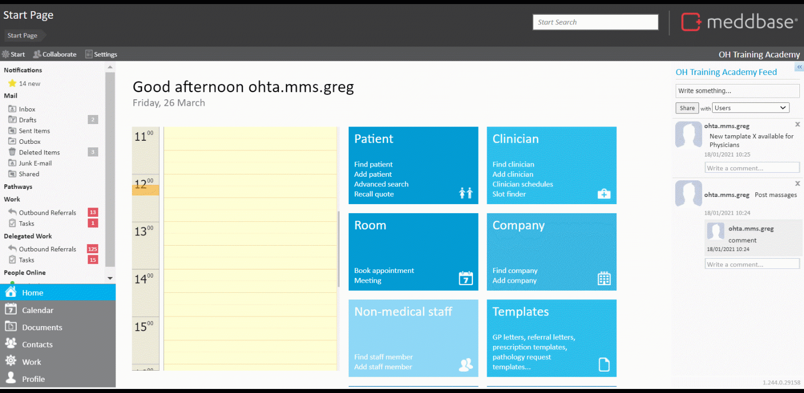
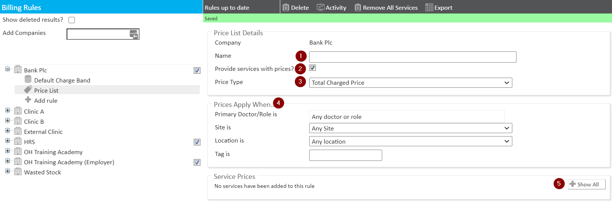
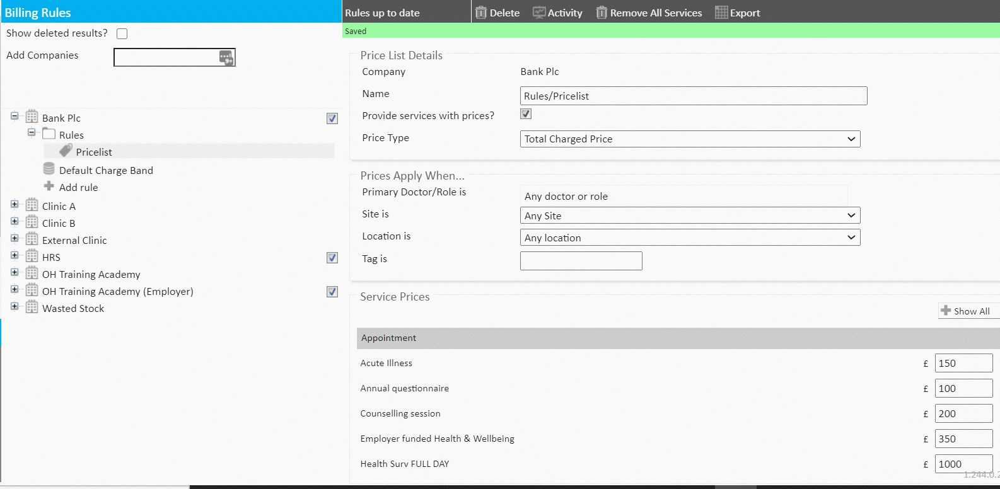
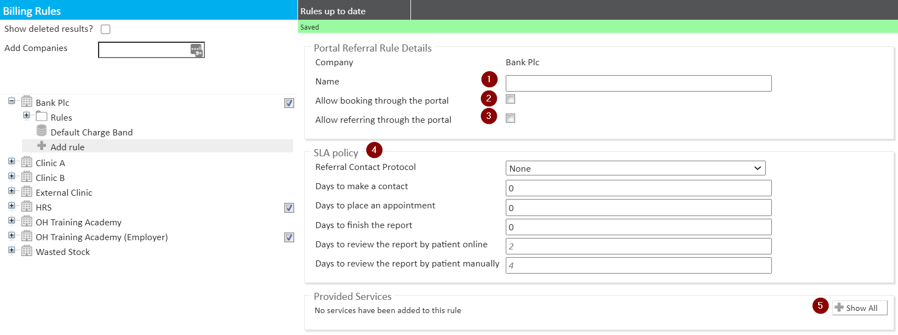
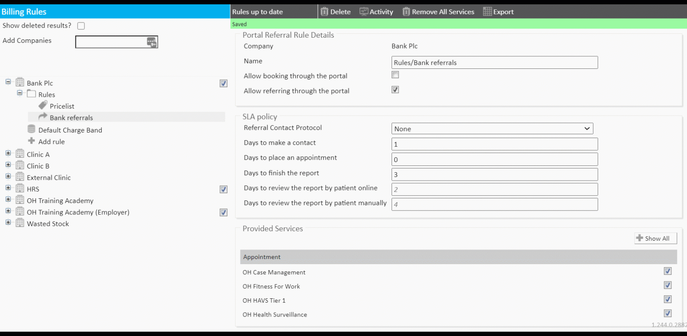

Meddbase gives users access to a comprehensive platform accommodating various aspects and workflows in Occupational Health. This functionality requires multiple configuration tasks to be completed in Meddbase.
This article will walk you through the 3rd part of the initial configuration required to utilize the Occupational Health functionality in Meddbase. The configuration steps discussed here are:
Once all Employers have been added to the database (see Part 1 of the initial setup), eligibility and pricing rules for each employer can be defined using the Billing Rules engine in Meddbase.
Once defined, these rules will be applied automatically for each respective debtor when selected services are consumed.
The first step is to add the employers to the Billing Rules view.

Internal type companies are visible here by default.
The next step is to add a Price List to an employer's charge band, so that the system can apply correct prices when this Employer, i.e. their employees, consume services:
A default charge band is automatically created for each company, however, it does not contain a Price List nor any rules.
As per the video above, expand the Employer icon and click +Add rule. On the list of rules click New Price List. The next dialog window allows you to configure the following:

Once configured, the Price List needs to be added to the employer's charge band.

*In general, all rules need to be added to a relevant charge band in order to cause the desired effect.
Managers logging into the Meddbase Referral Portal have the ability to refer staff members for OH services and/or make bookings directly into clinicians' schedules.
To make our services visible on the portal, a Portal Referral Rule needs to be configured and added to the respective employer's charge band.
As before, expand the Employer icon and click +Add rule. On the list of rules click New Portal Referral Rule. The next dialog window allows you to configure the following:
Once configured, the portal referral rule needs to be added to the employer's charge band.

Once configured, the portal referral rule needs to be added to the employer's charge band.
